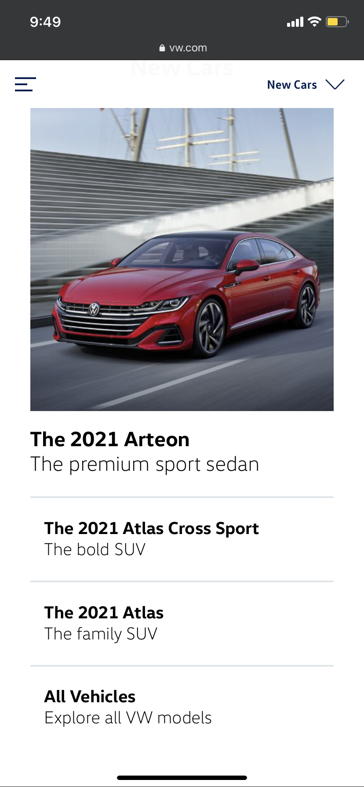
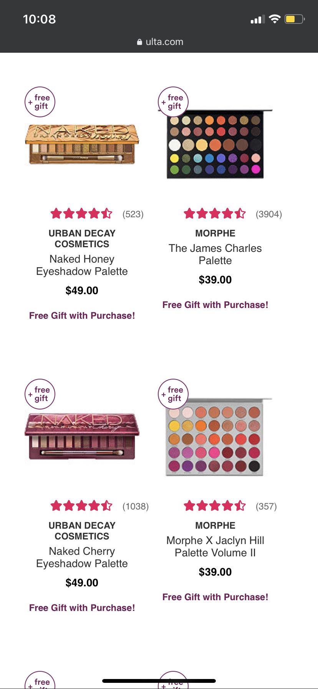
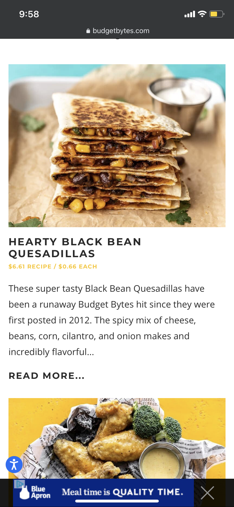

Alignment
vw.com
I think the Voltswagen mobile website is a great example of alignment because you can tell what is related just by following the lines. Everything is left-aligned and it gives the whole website an official feel.
Proximity
ulta.com
The Ulta website exemplifies proximity because it uses proximity to give you a lot of information without being confused. As you can see, it shows you information about the product right underneath that product and away from the others.
Repetition
budgetbytes.com
Budget Bytes is one of my favorite websites because it uses repitition so well. It only uses one font but consistently bolds the titles. It also is very monochrome exept for an orange accent here or there.